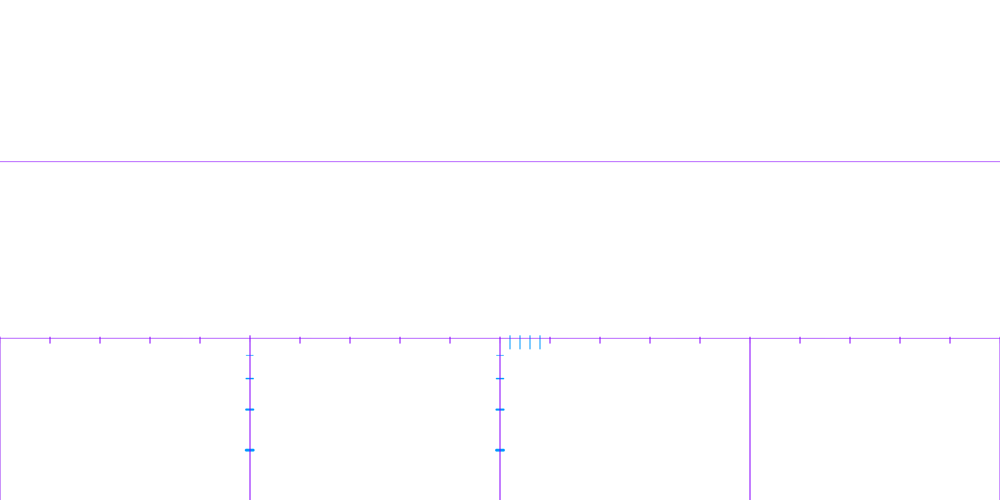

This workflow creates a .kmz file from geocoded 360° images taken with a GoPro Max. It involves package setup, file renaming, selecting images by distance (20m default), adding overlays (optional), creating a .kml file, then finally converting everything to a .kmz file for use in the pannotator package for annotating. To use this script open the pannotator_collect.Rproj in RStudio, then open this file (goproMaxStills2KmzConverter.qmd) and run each code chunk in order using the play arrow at the top-right corner of the chunk to create a .kmz file.
Description of the Workflow
This workflow has been developed to allow easy creation of .kmz files from 360 degree panospheric images. These can be taken with a gopro Max camera or most consumer drones like those made by DJI. The overlay may need to be adjusted depending on the size of the images generated etc.
Any geocoded equirectangular images (jpegs) can be used, regardless of how they were created, but this workflow is specifically tailored to the gopro Max.
Before using this script we recommend making a backup of the original camera files just in case as this script edits the files directly.
The workflow code below is as follows:
Check and install required packages
Set user options:
> folder containing 360 degree images (jpgs)
> distance between images (metres)
> add overlays (True/False)
> overlay file to use (png with transparency)
Rename the files (only renames files if names are 12 characters long)
Get subset of images a specified distance apart (defaults to 20m)
Add overlays to the images (optional)
Create a google earth .kml file
Convert the kml file and associated images into a single .kmz file
The resulting .kmz file can then be used in the pannotator package for annotating.
Check & Install Required Packages
In order for this workflow to function as expected there are a few dependent packages to install and configure. If you are on linux or mac you may have some issues with the ‘magick’ package, check the documentation here.
On Linux you need to install the ImageMagick++ library: on Debian/Ubuntu this is called libmagick++-dev:
sudo apt-get install libmagick++-dev
To install from source on macOS you need either imagemagick@6 or imagemagick from homebrew.
brew install imagemagick
In RStudio use the play arrow at the top-right corner of the code chunks to run them.
Show the code
dependentPackages <-c("svDialogs","tools","exiftoolr","geosphere","stringr","gpx","magick","imager","abind","fs","magrittr","zip","usefun" )for (i in dependentPackages) {print(paste0("Checking for: ", i))# First check if you have the package installed check_for_package <-system.file(package = i)print(check_for_package)# If not run the following code to install it.if (check_for_package =="") {print(paste0(i, " package not found .....installing now"))install.packages(i) } else {print(paste0(i, " package is already installed")) }}
Set User Options (manual version)
Here we manually set the user options which will be used in the following code chunks.
Show the code
# Directory containing gopro_images# (Windows) use forward slashes only, no spaces in folder or file names directory <-"C:/Users/username/pannotator_collect/gopro_images"# (Linux) use forward slashes only, no spaces in folder or file names # directory <- "/media/username/drivename/gitRepos/pannotator_collect/gopro_images"# (Mac) use forward slashes only, no spaces in folder or file names # directory <- "/Users/username/gitRepos/pannotator_collect/gopro_images"# Select the minimum distance in metres between each extracted image. metresBetweenEachImageWanted <-100# Set to TRUE to add overlays to each image file; or FALSE to use images without any overlays. addOverlays <-FALSE# Conditionally set the overlay image file if addOverlays is TRUEif (addOverlays ==TRUE) {# specify file path manually. overlayImageFile <-"./overlay_files/5m_overlay_wedges_straight6.png"} elseif (identical(addOverlays, FALSE) ||length(addOverlays) ==0) { overlayImageFile <-NULL}
Set User Options (svDialogs GUI version)
Here we set the user options using GUI popups which will be used in the following code chunks.
Show the code
# svDialogs::msgBox("There will be several popup dialogs so you can select 1:Directory Containing 360 Images 2:Minimum Distance Between images 3:Add overlay to images 4:Select overlay image file (png)")# # # Choose the directory path containing 360 images.# directory <- svDialogs::dlg_dir(default = getwd(), title = "Select Directory Containing 360 images")$res# # # Select the minimum distance in metres between each extracted image.# metresBetweenEachImageWanted <- svDialogs::dlg_input(message = "Enter a value for: metresBetweenEachImageWanted", default = "100")$res# # # Set to TRUE to add overlays to each image file; or FALSE to use images without any overlays.# addOverlays <- svDialogs::dlg_input(message = "Add Overlays to images?", default = "FALSE")$res# # # Conditionally set the overlay image file if addOverlays is TRUE# if (addOverlays == TRUE) {# # Choose the file for your desired overlay image (PNG image with transparency).# overlayImageFile <- svDialogs::dlg_open(default = "./overlay_files", title = "Select overlay file (png)", multiple = FALSE, filters = svDialogs::dlg_filters["png", ])$res# } else if (identical(addOverlays, FALSE) || length(addOverlays) == 0) {# overlayImageFile <- NULL# }# # finalMessage <- paste0("You have selected: Folder with 360 Images: ", directory,# " Metres Between Each Image Wanted: ", metresBetweenEachImageWanted, " AddOverlays: ", addOverlays)# if (addOverlays == TRUE) {# finalMessage <- paste0(finalMessage, " Overlay Image File: " , overlayImageFile)# }# # svDialogs::dlg_message(message =finalMessage, type = "ok")
Rename Files
By default most consumer cameras like the gopro max & DJI drones don’t allow the user to specify the file names they apply to images that they create.
A typical file name follows the format GS__XXXX.JPG - where XXXX is a counter number of the images taken by the camera.
To address this issue and make it easier to manage the files for processing, this code pre-pends the date_time stamp to the beginning of the files in a given directory. It’s useful for organising files when doing field work, especially when using multiple cameras at the same time.
The output format is: YYYYMMDD_HHMMSS_FileName.ext
Note: Gopro now have a custom firmware allowing you to set file names in the field; see this GoPro Labs link.
This code checks the file name length initially assuming that files names directly downloaded from the camera are 12 characters long. If the files used have longer file names they will not be renamed. This ensures they are only renamed once.
Show the code
library(exiftoolr)library(stringr)library(tools)# Check if 'directory' is set and valid, throw an error if notif (!exists("directory") ||!dir.exists(paste0(directory)) ||length(directory) ==0) {stop("'directory' does not exist. Please run the code chunk under 'Set User Options' above to set the directory containing the 360 images." )}# filter only .jpg or .JPG filesfile_extension <-"\\.[Jj][Pp][Gg]$"my_files <-list.files( directory,pattern =paste0("*", file_extension),all.files =FALSE,full.names =TRUE )#read the exif information in the file to get the creation datefiles_df <- exiftoolr::exif_read(my_files, args =c("-G1", "-a", "-s"))#Loop through the files and check to change file names#this checks if the files have already been changed by looking at the length of the file name.for (i in1:nrow(files_df)) {print("Checking if camera file name has not been changed")if (nchar(files_df[i, "System:FileName"]) ==12) {print("File appears to be 12 characters long")print(paste0("SourceFile: ", files_df[i, "SourceFile"])) origFullFileName <-paste0(files_df[i, "SourceFile"]) createDate <-paste0(files_df[i, "ExifIFD:DateTimeOriginal"])print(paste0("CreateDate: ", createDate)) formattedCreateDate <- stringr::str_replace_all(createDate, ":", "") formattedCreateDate <- stringr::str_replace_all(formattedCreateDate, " ", "_")print(paste0("formattedCreateDate: ", formattedCreateDate)) file_ext <-tolower(tools::file_ext(files_df[i, "System:FileName"])) newFileName <-paste0(files_df[i, "System:Directory"], "/", formattedCreateDate,"_",tools::file_path_sans_ext(basename(files_df[i, "System:FileName"])), ".",file_ext)print(paste0("newFileName: ", newFileName))file.rename(from = origFullFileName, to = newFileName)print("File name changed") } else {print("It appears that the file has already been renamed as it's greater than 12 characters long" )print(paste0("SourceFile: ", files_df[i, "SourceFile"])) }}
Function to calculate distances between image geo-locations.
This code looks through all the files in a given folder and copies images a user-specified distance apart into a new folder for use later on. It starts with the first file and looks for a file at least XX metres from that. Once it finds one it adds it to the list then uses it as the location to look for another file at least XX metres from it and so on until it gets to the end of the file list. This method is most suitable for linear transect sampling but should work with any images that are spaced out enough.
Show the code
library(geosphere)options(digits =20)options(digits.secs =20)options(scipen =9999)#function which takes 2 arguments#1:gpx_locations - a dataframe containing 4 columns("SourceFile", "System:Directory", "Composite:GPSLongitude", "Composite:GPSLatitude")#2:distance in metres between each image to extract. (default=20m)findImagesEveryXmetres <-function(my_gpx_locs, metresToNextImage =20) { gpx_locs <- my_gpx_locs keeps <-c("Composite:GPSLongitude", "Composite:GPSLatitude") points <- gpx_locs[keeps]#View(points)#View(gpx_locs)#calculate the distance between any two points distance_m <- geosphere::distm(points , fun = geosphere::distHaversine)rownames(distance_m) <-basename(gpx_locs[, "SourceFile"])colnames(distance_m) <-basename(gpx_locs[, "SourceFile"])#View(distance_m)#find images a certain distance apart. selected_files <-vector() metres_between_images <- metresToNextImageprint(paste0("Searching for images apart by: ", metres_between_images," metres" ))for (i in1:nrow(distance_m)) {if (i ==1) {#if it is the first frame add it as the current frame selected_files <-append(selected_files, rownames(distance_m)[i]) current_frame <-rownames(distance_m)[i]print(paste0("Frame 1: ", current_frame))print(paste0("looking for frame >", metres_between_images ," Metres from frame 1" )) }#if the current frame is greater than the specified metresif (distance_m[i, current_frame] >as.numeric(metres_between_images)) { current_frame <-rownames(distance_m)[i]print(paste0("current_frame: ", current_frame)) selected_files <-append(selected_files, current_frame) } }print(paste0("Files found:", selected_files)) new_folder <-paste0(gpx_locs[1, "System:Directory"], "_", metres_between_images, "m_apart")dir.create(new_folder) source_folder <-dirname(gpx_locs[1, "SourceFile"])print(gpx_locs[1, "System:Directory"])for (q in selected_files) { file_to_copy <-paste0(source_folder, "/", q) destination <-paste0(new_folder, "/", q)file.copy( file_to_copy, destination,overwrite =TRUE,recursive =FALSE,copy.mode =TRUE,copy.date =TRUE ) } }print("findImagesEveryXmetres(my_gpx_locs, metresToNextImage) function is now available to call")
Call Function Above
Now call the function above to calculate the distance between all the images and copy them to a new folder.
Show the code
library(exiftoolr)# Check if 'directory' is set and valid, throw an error if notif (!exists("directory") ||!dir.exists(paste0(directory)) ||length(directory) ==0) {stop("'directory' does not exist. Please run the code chunk under 'Set User Options' above to set the directory containing the 360 images." )}file_extension <-"\\.[Jj][Pp][Gg]$"my_files <-list.files(normalizePath(directory, winslash ="/"),pattern =paste0(file_extension),all.files =FALSE,full.names =TRUE )image_files_df <- exiftoolr::exif_read(my_files, args =c("-G1", "-a", "-s"))#View(image_files_df)gpx_locs <-as.data.frame(image_files_df[, c("SourceFile","System:Directory","Composite:GPSLatitude","Composite:GPSLongitude" )])#View(gpx_locs)if (!exists("metresBetweenEachImageWanted") ||length(metresBetweenEachImageWanted) ==0) {print("'metresBetweenEachImageWanted' does not exist. Using Default value. Please run the code chunk under 'Set User Options' above if you want to change the metresBetweenEachImageWanted")findImagesEveryXmetres(my_gpx_locs = gpx_locs)} else {findImagesEveryXmetres(my_gpx_locs = gpx_locs, metresToNextImage = metresBetweenEachImageWanted)}
Add Overlays to the Images
The code below goes through the images in the folder created above and adds an overlay file to them. This overlay must be specific to the camera used to create the 360 degree images as the focal length of the lens etc. will define how the overlay should look.
In this example we used a gopro Max at 3.2m above the ground. The easiest way to determine how an overlay should look is to take some images with the camera at the specified height with the desired overlay marked on the ground so you have an easy template to base your overlay on.
Here we wanted a circular marker with a 5 metre radius and we were lucky to find a round concrete water tank buried in the ground with the required radius. We marked the distance in metres from the centre of the plot directly under the camera using a pole with black marking tape at 1 metre intervals. Below is the image loaded into inkscape so we could draw the required marker lines for the overlay.
overlay image with camera background
Note: There is a slight discrepancy with the line on the right side of the image. This is due to the camera not being exactly vertical when capturing the image.
The overlay was created using inkscape and then exported as a portable network graphics (.png) file with transparency. See the example below:

overlay image with transparency
Code to Create Overlays (magick version)
The code below uses imagemagick to load the underlying base file and then overlays the .png and saves out the flattened file for use in the kml/kmz files in the following steps. If you are on linux and have issues with the ‘magick’ package you may need to up the memory settings in the /etc/ImageMagick-6/policy.xml file.
#library(magick)library(tools)library(magrittr)# Check if 'directory' is set and valid, throw an error if notif (!exists("directory") ||!dir.exists(paste0(directory)) ||length(directory) ==0) {stop("'directory' does not exist. Please run the code chunk under 'Set User Options' above to set the directory containing the 360 images." )}# if 'metresBetweenEachImageWanted' doesn't exist then add the default metres between imagesif (!exists("metresBetweenEachImageWanted") ||length(metresBetweenEachImageWanted) ==0) {print("'metresBetweenEachImageWanted' not selected...using default: Please run the code chunk under 'Set User Options' above to set the metresBetweenEachImageWanted." ) metresBetweenEachImageWanted <-20}# if 'addOverlays' doesn't exist then throw an error asking to set 'addOverlays'if (!exists("addOverlays") ||length(addOverlays) ==0) {stop("'addOverlays' does not exist. Please run the code chunk under 'Set User Options' above to set the addOverlays.")}if (addOverlays ==TRUE) { overlay_file <- overlayImageFile new_directory <-paste0(directory,"_", metresBetweenEachImageWanted,"m_apart")if (!dir.exists(paste0(new_directory))) {print(paste0(new_directory, " does not exist!"))stop("Did you run the code chunk above to find images a certain distance apart?" )}# first create a new directory to add the overlay images todir.create(paste0(new_directory, "/with_overlay/")) file_extension <-"\\.[Jj][Pp][Gg]$" files_lst <-list.files( new_directory,pattern =paste0(file_extension),all.files =FALSE,full.names =TRUE,recursive =FALSE,include.dirs =FALSE )for (t in1:length(files_lst)) { background_image <- magick::image_read(files_lst[t]) overlay <- magick::image_read(overlay_file) image_dir <-dirname(files_lst[t]) overlay_image_dir <-paste0(image_dir, "/with_overlay/") new_filename <-paste0(overlay_image_dir,basename(tools::file_path_sans_ext(files_lst[t])),"_with_overlay.jpg")print(paste0("Adding overlay to create: ", new_filename)) img <-c(background_image, overlay) %>% magick::image_flatten(.) %>% magick::image_write(., new_filename, format ="jpg") }} else {print("'addOverlays' not TRUE: No overlay files generated")}
Code to Create Overlays (imager version)
This code is an alternative version in case you have problems installing the magick package. It uses the imager package.
Show the code
# library(imager)# library(abind)# library(exiftoolr)# # # Check if 'directory' is set and valid, throw an error if not# if (!exists("directory") || !dir.exists(paste0(directory)) || length(directory) == 0) {# stop("'directory' does not exist. Please run the code chunk under 'Set User Options' above to set the directory containing the 360 images."# )# }# # # if 'metresBetweenEachImageWanted' doesn't exist then add the default metres between images# if (!exists("metresBetweenEachImageWanted") || length(metresBetweenEachImageWanted) == 0) {# print("'metresBetweenEachImageWanted' not selected...using default: Please run the code chunk under 'Set User Options' above to set the metresBetweenEachImageWanted."# )# metresBetweenEachImageWanted <- 20# }# # # if 'addOverlays' doesn't exist then throw an error asking to set 'addOverlays'# if (!exists("addOverlays") || length(addOverlays) == 0) {# stop("'addOverlays' does not exist. Please run the code chunk under 'Set User Options' above to set the addOverlays.")# }# # if (addOverlays == TRUE) {# overlay_file <- overlayImageFile# # new_directory <- paste0(directory,# "_",# metresBetweenEachImageWanted,# "m_apart")# # if (!dir.exists(paste0(new_directory))) {# print(paste0(new_directory, " does not exist!"))# stop("Did you run the code chunk above to find images a certain distance apart?"# )# }# # first create a new directory to add the overlay images to# dir.create(paste0(new_directory, "/with_overlay/"))# # file_extension <- "\\.[Jj][Pp][Gg]$"# # files_lst <-# list.files(# new_directory,# pattern = paste0(file_extension),# all.files = FALSE,# full.names = TRUE,# recursive = FALSE,# include.dirs = FALSE# )# # for (t in 1:length(files_lst)) {# # base_image <- imager::load.image(files_lst[t])# overlay <- imager::load.image(overlay_file)# # # Resize overlay to match the dimensions of the base image (if needed)# overlay_resized <- resize(overlay, dim(base_image)[1], dim(base_image)[2])# # # Add the overlay onto the base image# # Ensure the overlay has an alpha channel for transparency# if (dim(overlay_resized)[4] == 4) {# # Extract RGB channels from the base image# base_rgb <- base_image[,,,1:3]# # # Extract RGB and alpha channels from the overlay# overlay_rgb <- overlay_resized[,,,1:3]# alpha <- overlay_resized[,,,4]# # #print(dim(base_rgb)) # Dimensions of base image's RGB channels# #print(dim(overlay_rgb)) # Dimensions of overlay's RGB channels# #print(dim(alpha)) # Dimensions of overlay's alpha channel# # alpha <- abind::abind(alpha, alpha, alpha, along = 3)# # # Blend the overlay with the base image using the alpha channel# blended_image <- (base_rgb * (1 - alpha)) + (overlay_rgb * alpha)# }# # image_dir <- dirname(files_lst[t])# overlay_image_dir <- paste0(image_dir, "/with_overlay/")# new_filename <-# paste0(overlay_image_dir,# basename(tools::file_path_sans_ext(files_lst[t])),# "_with_overlay.jpg")# print(paste0("Adding overlay to create: ", new_filename))# # # Save the result# imager::save.image(imager::as.cimg(blended_image), new_filename)# # exif_args <- c(paste0('-TagsFromFile=', files_lst[t]),# '-All:All',# '-overwrite_original')# # exiftoolr::exif_call(args = exif_args,# path = new_filename,# stdout = FALSE,# quiet = TRUE# )# # }# # } else {# print("'addOverlays' not TRUE: No overlay files generated")# }
Generate kml File
This code generates a google earth kml file linking to the image files in the folder generated above. It uses ExifTool with a template “kml_hide_rollover.fmt” to create the kml file.
Show the code
library(readr)# Check if 'directory' is set and valid, throw an error if notif (!exists("directory") ||!dir.exists(paste0(directory)) ||length(directory) ==0) {stop("'directory' does not exist. Please run the code chunk under 'Set User Options' above to set the directory containing the 360 images." )}# if 'metresBetweenEachImageWanted' doesn't exist then add the default metres between imagesif (!exists("metresBetweenEachImageWanted") ||length(metresBetweenEachImageWanted) ==0) {print("'metresBetweenEachImageWanted' not selected...using default: Please run the code chunk under 'Set User Options' above to set the metresBetweenEachImageWanted." ) metresBetweenEachImageWanted <-20}if (addOverlays ==TRUE) {new_directory <-paste0(directory,"_",metresBetweenEachImageWanted,"m_apart/with_overlay")output_kml <-normalizePath(paste0(directory,"_", metresBetweenEachImageWanted,"m_apart_with_overlay.kml"), winslash ="/", mustWork =FALSE)} elseif(addOverlays ==FALSE||length(addOverlays) ==0) { new_directory <-paste0(directory,"_", metresBetweenEachImageWanted,"m_apart")output_kml <-normalizePath(paste0(directory,"_", metresBetweenEachImageWanted,"m_apart.kml"), winslash ="/", mustWork =FALSE)}exif_args <-c("-p", "kml_hide_rollover.fmt", "-r")exiftoolr::exif_call(args = exif_args,path = new_directory,stdout = output_kml,quiet =FALSE)# now fix the links to the images to make them relative.mystring <- readr::read_file(output_kml)path_only <-paste0(dirname(output_kml))# check if the folder is root of the driveif(nchar(path_only) ==3){ mystring2 <-gsub(path_only, "./", mystring, fixed = T)} else { mystring2 <-gsub(path_only, ".", mystring, fixed = T)}# Write the file outsink(paste0(output_kml))writeLines(mystring2)sink()print(paste0("generated kml file: ", output_kml))
Convert kml & Images into a kmz File
This code reads the .kml file created above and converts it to a .kmz file. This involves zipping up the images and the .kml file into one file. It also edits the relative links etc. The convenience of the kmz file is that it combines the kml and associated images into one file.
NOTE: This code can generate kmz files >2GB. These files won’t open correctly in google earth but are not corrupt and will work fine in pannotator. This is a limitation of google earth being 32 bit. You can read about it here.
Show the code
library(fs)library(usefun)library(readr)library(stringr)library(zip)# Check if 'directory' is set and valid, throw an error if notif (!exists("directory") ||!dir.exists(paste0(directory)) ||length(directory) ==0) {stop("'directory' does not exist. Please run the code chunk under 'Set User Options' above to set the directory containing the 360 images." )}# if 'metresBetweenEachImageWanted' doesn't exist then add the default metres between imagesif (!exists("metresBetweenEachImageWanted") ||length(metresBetweenEachImageWanted) ==0){print("'metresBetweenEachImageWanted' not selected...using default: Please run the code chunk under 'Set User Options' above to set the metresBetweenEachImageWanted." ) metresBetweenEachImageWanted <-20}if (addOverlays ==TRUE) {new_directory <-paste0(directory,"_", metresBetweenEachImageWanted,"m_apart/with_overlay")output_kml <-normalizePath(paste0(directory,"_", metresBetweenEachImageWanted,"m_apart_with_overlay.kml"), winslash ="/", mustWork =FALSE)} elseif(addOverlays ==FALSE||length(addOverlays) ==0) { new_directory <-paste0(directory,"_", metresBetweenEachImageWanted,"m_apart")output_kml <-normalizePath(paste0(directory,"_", metresBetweenEachImageWanted,"m_apart.kml"), winslash ="/", mustWork =FALSE)}print("Generating kmz file for:")print(output_kml)kml_file_name <-basename(output_kml)kml_image_directory <- new_directorydir_to_copy <-normalizePath(kml_image_directory, winslash ="/", mustWork =FALSE)temp_folder <-paste0(usefun::get_parent_dir(directory), "temp")new_dir_path <-normalizePath(paste0(temp_folder, "/files/"), winslash ="/", mustWork =FALSE)fs::dir_copy(dir_to_copy, new_dir_path, overwrite =TRUE)fs::file_copy(output_kml, temp_folder, overwrite =TRUE)file.rename(from =file.path(temp_folder, kml_file_name),to =file.path(temp_folder, "doc.kml"))#clean up all of the extra line breaks in the kml filemystring <- readr::read_file(file.path(temp_folder, "doc.kml"))mystring2 <-gsub('\r\r\r\r\r\n', '\n', mystring, fixed = T)mystring3 <-gsub('\r\r\r\r\n', '\n', mystring2, fixed = T)mystring4 <-gsub('\r\r\r\n', '\n', mystring3, fixed = T)mystring5 <-gsub('\r\r\n', '\n', mystring4, fixed = T)mystring6 <-gsub('\n\r\n', ' ', mystring5, fixed = T)# Extract the part of the string after the last '/'if (addOverlays ==TRUE) {last_part_dir <-tail(strsplit(dir_to_copy, "/")[[1]], 2)mykml <- stringr::str_replace_all(mystring6[1], paste0("src='./", last_part_dir[1],"/", last_part_dir[2]), "src='files")} elseif(addOverlays ==FALSE) { last_part_dir <-tail(strsplit(dir_to_copy, "/")[[1]], 2)mykml <- stringr::str_replace_all(mystring6[1], paste0("src='./", last_part_dir[2]), "src='files")}mykml <- stringr::str_replace_all(mykml[1], "<name>./", "<name>")sink(paste0(file.path(temp_folder, "doc.kml")))writeLines(mykml)sink()# name for new kmz filekmz_file_name <-paste0(usefun::get_parent_dir(directory),"/",basename(tools::file_path_sans_ext(output_kml)),".kmz")# create the kmz filemyWd <-normalizePath(temp_folder, winslash ="/", mustWork =FALSE)files_lst <-list.files(path = temp_folder,pattern ="*.jpg|*.kml",all.files =FALSE,full.names =FALSE,recursive =TRUE,ignore.case =FALSE,include.dirs =FALSE )# zip the file upzip::zip( kmz_file_name, files_lst,recurse =FALSE,compression_level =9,include_directories =TRUE,root = myWd,mode ="mirror")# remove the temp folder and its contentsunlink(temp_folder, recursive =TRUE)